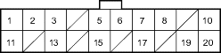

EPS Components
|
17-71 |
EPS Control Unit Inputs and Outputs at Connector C (14P)
EPS CONTROL UNIT CONNECTOR C (20P)

Wire side of female terminals
| Terminal number | Wire colour | Terminal sign
(Terminal name) |
Description | Measurement | |||
| Terminals | Conditions
Ignition switch ON (II) |
Voltage | |||||
| 1*-1 | YEL/RED | VT6
(Voltage torque 6) |
Detects torque sensor signal | 1-Ground | Start the engine and turn the steering wheel | About 5 - 0V | |
| 2 | PNK | T/S GND
(Torque sensor ground) |
Ground for the torque sensor | - | - | - | |
| 3 | ORN | VCC1
(Voltage common 1) |
Power source for torque sensor | 3-Ground | Start the engine | Battery voltage | |
| Ignition switch OFF | 0V | ||||||
| 5*-2 | YEL/RED | VT6
(Voltage torque 6) |
Detects torque sensor signal | 5-Ground | Start the engine and turn the steering wheel | About
5 - 0V |
|
| 6 | YEL/BLU | WLP
(Warning lamp) |
Drives the EPS indicator light | 6-Ground | EPS indicator | ON | Battery voltage |
| OFF | 0V | ||||||
| 7 | BLU/WHT | VSP
(Vehicle speed pulse) |
Detects the vehicle speed signal for the speed sensor or the ECM/PCM (4 pulse/Rev). | 7-Ground | Raise the vehicle off the ground and spin the front wheel | Alternating voltage about
0V - 5V - 0V - 5V |
|
| 8 | BRN | SCS
(Service check signal) |
Detects service check connector signal | - | - | - | |
| 10 | YEL | IG1
(Ignition 1) |
Power source for activating the system | 10-Ground | Ignition switch ON (II) | Battery voltage | |
| Ignition switch OFF | 0V | ||||||
| 11 | GRN/YEL | VCC2
(Voltage common 2) |
Drives the torque sensor | 11-Ground | Start the engine | About 5V | |
| Ignition switch OFF | 0V | ||||||
| 13 | BLU/ORN | VT3
(Voltage torque 3) |
Detects torque sensor signal | 13-Ground | Start the engine and turn the steering wheel | About
5 - 0V |
|
| 15 | YEL/BLK | T/SIG
(Torque sensor F/S signal) |
Detects torque sensor signal | 15-Ground | Start the engine | Momently 5V | |
| 17 | LT GRN/BLK | PSW
(Power steering switch) |
Provides power steering switch signal | 17-Ground | Start the engine and turn the steering wheel | 0 - 12V | |
| 19 | BLU | NEP
(Engine pulse) |
Detects the engine pulse | 19-Ground | Start the engine, and let it idle | About
0 - 12V |
|
| 20 | GRY | DIAG-H
(Diagnosis-H) |
Communications with Honda PGM Tester | - | - | - | |
*1: KU model
*2: Except KU model